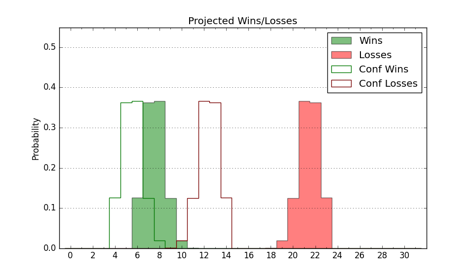

| Home | Game Probabilities | Conferences | Preseason Predictions | Odds Charts | NCAA Tournament |
| City: | Stony Brook, New York | |
| Conference: | Colonial (7th)
| |
| Record: | 4-8 (Conf) 6-17 (Overall) | |
| Ratings: | Comp.: -15.9 (330th) Net: -16.1 (330th) Off: 93.5 (329th) Def: 109.5 (307th) SoR: 0.0 (155th) |
| Remaining | ||||||
|---|---|---|---|---|---|---|
| Date | Opponent | Win Prob | Pred. | |||
| 2/11 | North Carolina A&T (291) | 52.2% | W 68-67 | |||
| 2/13 | @ Delaware (229) | 16.1% | L 60-70 | |||
| 2/16 | William & Mary (315) | 59.8% | W 66-64 | |||
| 2/18 | Hofstra (94) | 14.5% | L 61-72 | |||
| 2/23 | @ UNC Wilmington (154) | 8.9% | L 54-69 | |||
| 2/25 | @ College of Charleston (77) | 3.7% | L 58-80 | |||
| Previous | Game Score | |||||
| Date | Opponent | Win Prob | Result | Off | Def | Net |
| 11/7 | @Florida (41) | 2.1% | L 45-81 | -13.9 | 0.8 | -13.1 |
| 11/15 | @Rhode Island (241) | 17.8% | L 64-74 | 6.5 | -4.1 | 2.4 |
| 11/17 | @Brown (179) | 10.5% | L 53-64 | -12.3 | 16.1 | 3.8 |
| 11/23 | @FIU (214) | 14.6% | L 50-83 | -18.1 | -7.0 | -25.2 |
| 11/25 | (N) Eastern Washington (124) | 11.6% | L 52-81 | -10.5 | -7.0 | -17.5 |
| 12/3 | Yale (70) | 10.4% | L 72-77 | 24.4 | -3.5 | 20.8 |
| 12/9 | @Bryant (180) | 10.5% | L 60-79 | -8.0 | 4.0 | -3.9 |
| 12/12 | Sacred Heart (334) | 65.3% | W 71-64 | 4.6 | 5.9 | 10.5 |
| 12/15 | @Wagner (325) | 32.2% | L 55-58 | 5.6 | 1.6 | 7.2 |
| 12/18 | Army (248) | 44.2% | W 66-59 | -2.0 | 18.5 | 16.6 |
| 12/22 | @West Virginia (16) | 1.3% | L 64-75 | 18.4 | 9.4 | 27.8 |
| 12/31 | @Northeastern (294) | 24.8% | W 65-61 | 5.9 | 16.8 | 22.7 |
| 1/5 | @Monmouth (353) | 47.0% | W 67-56 | 4.2 | 16.8 | 20.9 |
| 1/7 | Towson (149) | 24.6% | L 55-67 | -7.2 | -4.7 | -11.8 |
| 1/12 | Drexel (188) | 30.3% | W 67-66 | 16.0 | -10.7 | 5.3 |
| 1/14 | @North Carolina A&T (291) | 24.3% | L 59-61 | -4.9 | 11.9 | 7.0 |
| 1/19 | Northeastern (294) | 52.9% | L 66-79 | 0.3 | -31.4 | -31.1 |
| 1/21 | UNC Wilmington (154) | 25.0% | L 51-62 | -9.7 | 4.9 | -4.7 |
| 1/26 | @William & Mary (315) | 30.4% | L 74-77 | 25.8 | -23.2 | 2.6 |
| 1/28 | @Hampton (354) | 47.4% | W 71-66 | 5.3 | 10.0 | 15.3 |
| 2/2 | Elon (319) | 60.8% | L 55-69 | -14.2 | -15.5 | -29.7 |
| 2/4 | @Hofstra (94) | 4.7% | L 58-79 | 9.3 | -13.7 | -4.4 |
| 2/8 | Monmouth (353) | 75.1% | L 54-61 | -21.5 | -1.4 | -22.9 |
| Stats & Trends | |||||
|---|---|---|---|---|---|
| Current | Day | Week | Month | Season | |
| Composite | -15.9 | +0.0 | -1.2 | -2.8 | -7.2 |
| Comp Rank | 330 | -- | -5 | -18 | -68 |
| Net Efficiency | -16.1 | +0.0 | -1.1 | -2.2 | -- |
| Net Rank | 330 | -- | -4 | -16 | -- |
| Off Efficiency | 93.5 | +0.0 | -0.4 | +1.3 | -- |
| Off Rank | 329 | -- | -7 | -- | -- |
| Def Efficiency | 109.5 | +0.0 | -0.7 | -3.5 | -- |
| Def Rank | 307 | -- | -11 | -45 | -- |
| SoS Rank | 278 | +1 | +4 | -47 | -- |
| Exp. Wins | 7.6 | +0.0 | -0.9 | -2.0 | -4.1 |
| Exp. Conf Wins | 5.6 | +0.0 | -0.9 | -2.0 | -2.3 |
| Conf Champ Prob | 0.0 | -- | -- | -0.0 | -2.4 |

| Advanced Stats | ||
|---|---|---|
| Stat | Value | Rank |
| Off Eff FG % | 0.465 | 313 |
| Off Ast Ratio | 0.131 | 267 |
| Off ORB% | 0.194 | 343 |
| Off TO Rate | 0.172 | 289 |
| Off FT Ratio | 0.316 | 168 |
| Def Eff FG % | 0.525 | 260 |
| Def Ast Ratio | 0.166 | 329 |
| Def ORB% | 0.254 | 126 |
| Def TO Rate | 0.111 | 361 |
| Def FT Ratio | 0.249 | 40 |